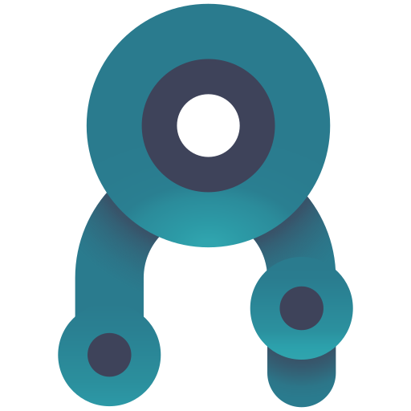
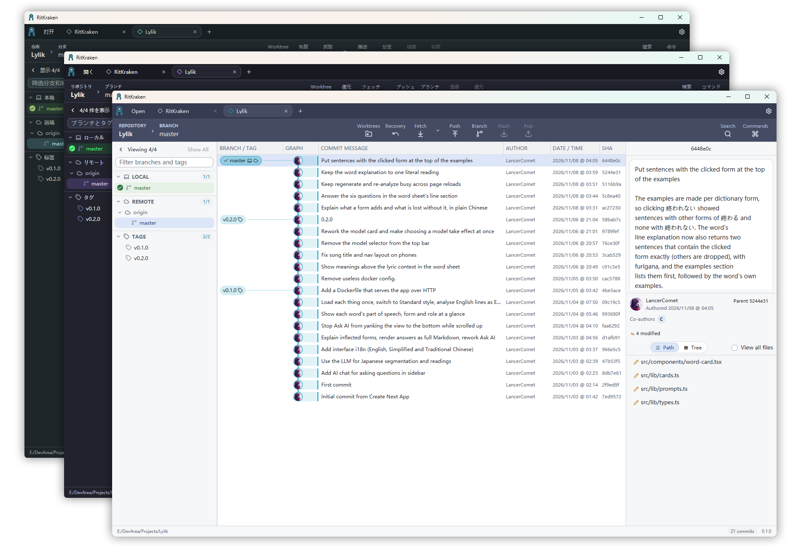

RitKraken
A fast desktop Git client written in Rust, powered by GPUI Kit and your local Git CLI.

What it does
-
History and commit graph
Browse the commit graph and repository history in a desktop UI built for speed.
-
Diffs and file review
A patched GPUI diff renderer with split view, hunk and line controls, and change overview markers.
-
Worktrees and remotes
Repository operations delegate to your installed
gitexecutable, so behaviour matches your CLI. -
Sessions and themes
Multiple session tabs, file review, and themeable preferences in the desktop app.
Requirements
| To | You need |
|---|---|
| Run it | Git 2.37 or newer on your PATH. On macOS, version 15 or newer. |
| Build it | Rust 1.92 or newer; Visual Studio C++ Build Tools and the Windows SDK on Windows, or Xcode Command Line Tools on macOS. Python 3.11+ for the project checks. |
Building
Run the build script for your platform from the repository root. The output lands in the fixed platform build directory.
| Platform | Command | Output |
|---|---|---|
| Windows | .\build-windows.cmd |
target\windows\<target>\release\RitKraken.exe |
| macOS | bash ./build-macos.sh |
target/macos/<target>/release/RitKraken.app |